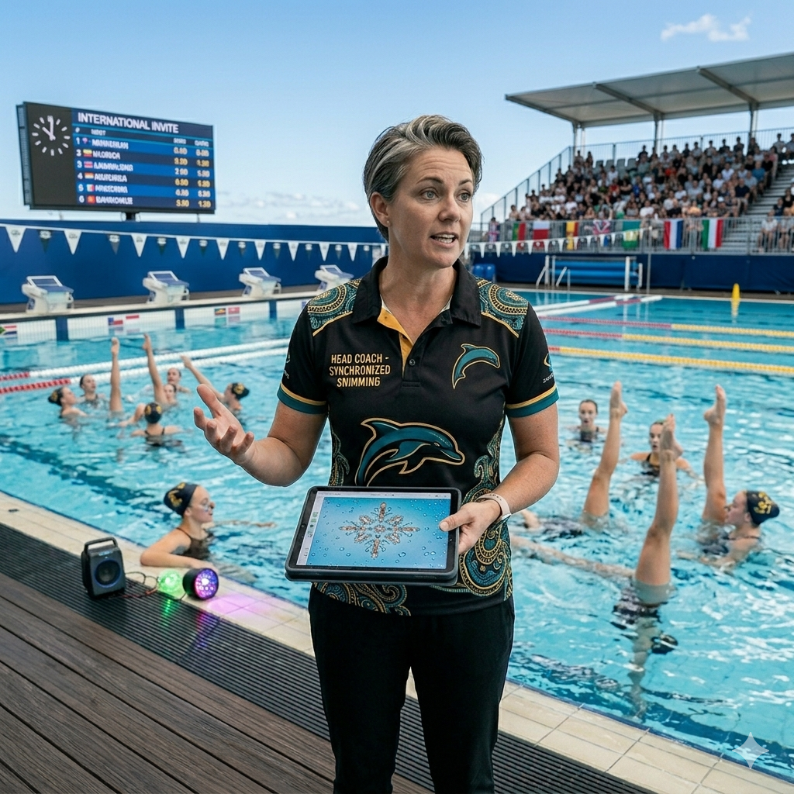
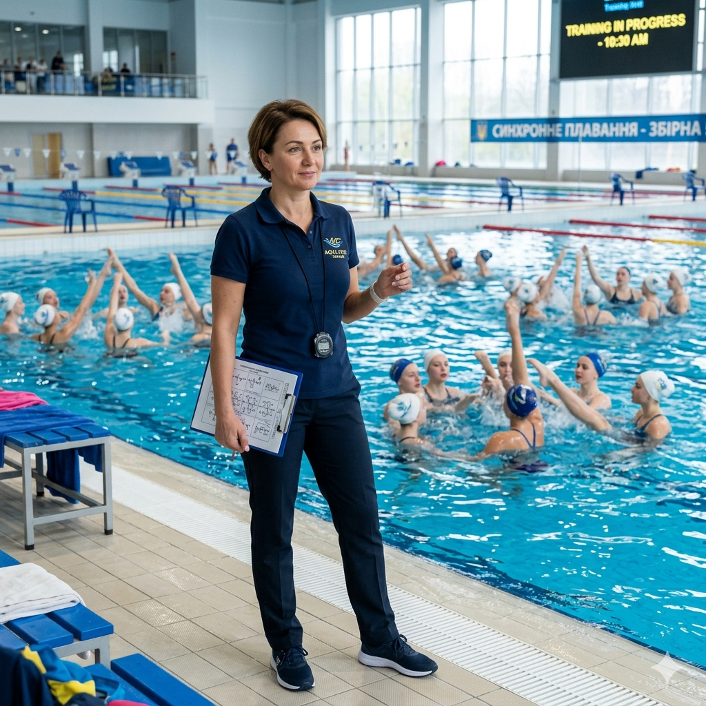
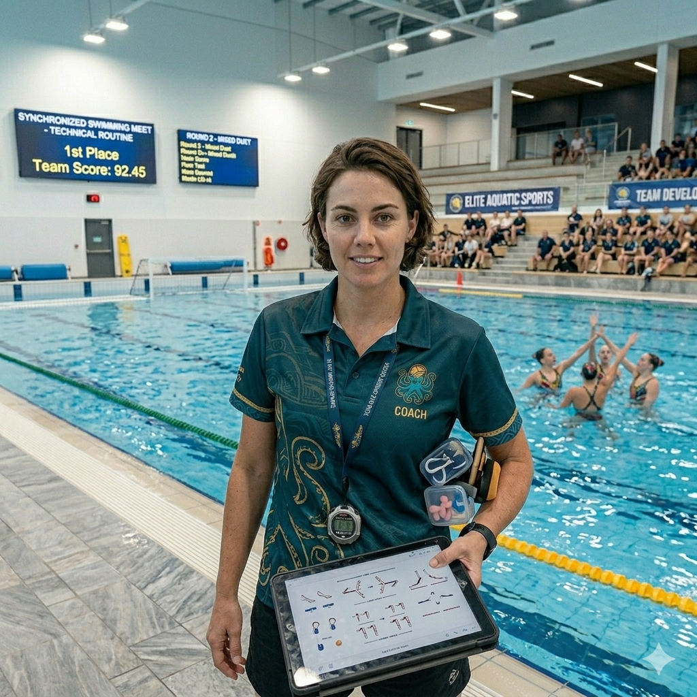
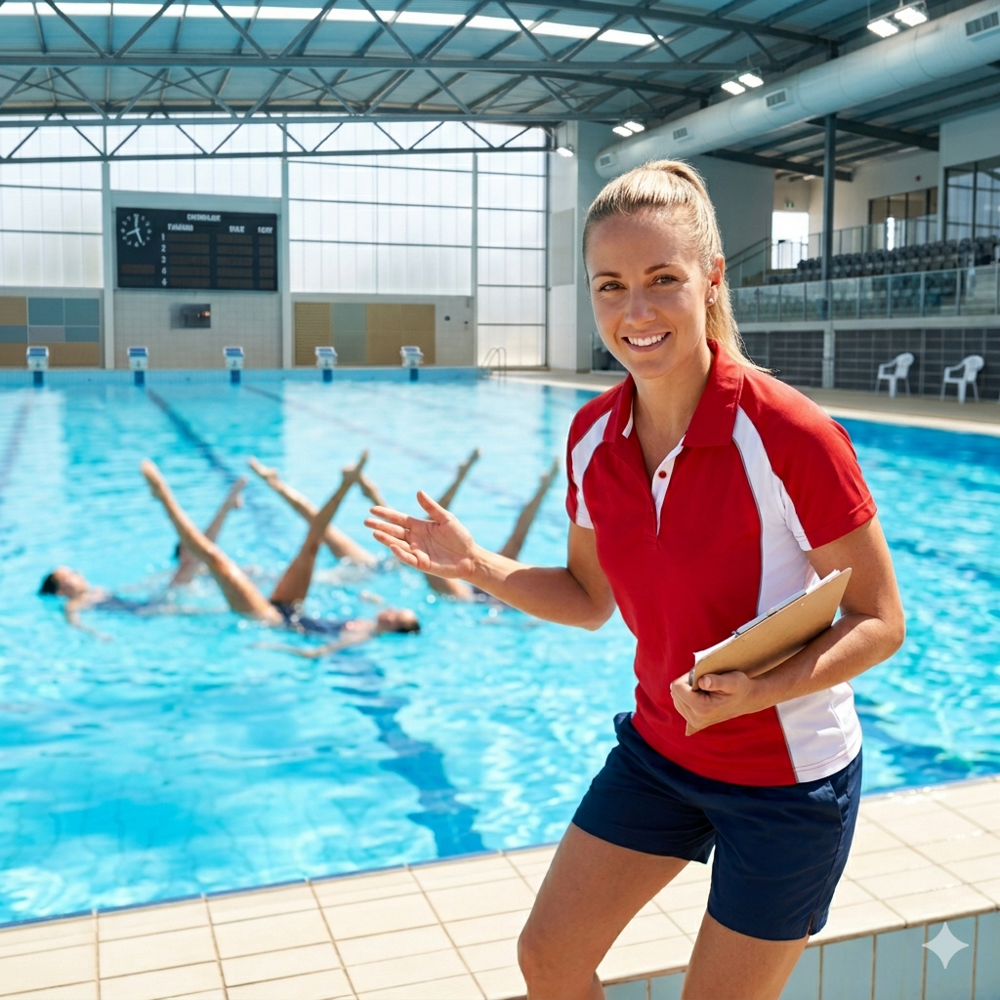

Синхронне плавання (артистичне плавання) — витончений та складний олімпійський вид спорту, що поєднує в собі плавання, гімнастику та танець під музику у воді. Виникло на початку XX століття і з 1984 року є невід'ємною частиною Олімпійських ігор. Виступи проходять у басейні розміром мінімум 20 на 30 метрів і глибиною від 3 метрів. Найпрестижніші турніри: Олімпіада, Чемпіонат світу (World Aquatics) та Суперкубок. Цей спорт вимагає неймовірної гнучкості, затримки дихання, почуття ритму та бездоганної командної взаємодії.


Правила Програми поділяються на технічну (виконання обов'язкових елементів) та довільну. Спортсмени виступають у соло, дуетах або групах до 8 осіб. Тривалість виступу становить від 2 до 4 хвилин. Мета — отримати найвищу оцінку від суддів, які оцінюють три категорії: ступінь складності, художнє враження та техніку виконання. Торкатися дна або стінок басейну під час виступу суворо заборонено. Спеціальні підводні динаміки допомагають спортсменам ідеально чути музичний такт під водою.
Професіонали, які допоможуть вам досягти ідеального результату

Валерія Пасичник — Синхронне плавання. Досвід: 14 років. Спеціалізація: акробатичні підводні поштовхи, високі підйоми, комплексна підготовка груп. Досягнення: заслужений тренер України, виховала три дуети для олімпійської збірної. Про себе: «Створюю унікальні та складні підтримки у воді, виводжу командну синхронність на світовий рівень».

Олена Ковальчук — Синхронне плавання. Досвід: 12 років. Спеціалізація: артистизм, хореографія довільних програм, пластика рухів. Досягнення: майстер спорту міжнародного класу, головний хореограф юніорської збірної. Про себе: «Навчу повністю розчинятися в музиці, тримати ідеальну міміку та передавати емоції суддям».

Анна Савченко — Синхронне плавання. Досвід: 7 років. Спеціалізація: обов'язкові технічні елементи, гнучкість, розтяжка на суші. Досягнення: дворазова чемпіонка України в дуеті, сертифікований суддя національної категорії. Про себе: «Поставлю бездоганну геометрію в кожній фігурі та відточу базові елементи до автоматизму».

Катерина Вербицька — Синхронне плавання. Досвід: 9 років. Спеціалізація: соло-виступи, індивідуальний ритм, тривала затримка дихання. Досягнення: фіналістка чемпіонату Європи, підготувала 5 майстрів спорту. Про себе: «Розкрию твій персональний потенціал, навчу впевнено триматися соло та контролювати дихання під навантаженням».